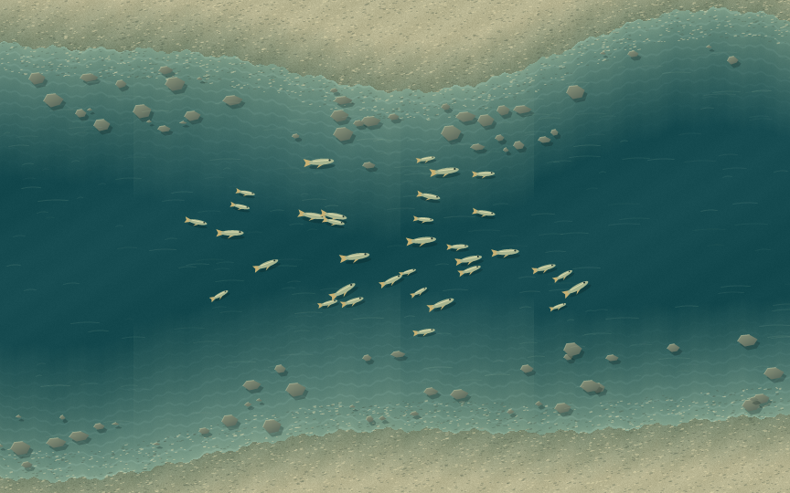
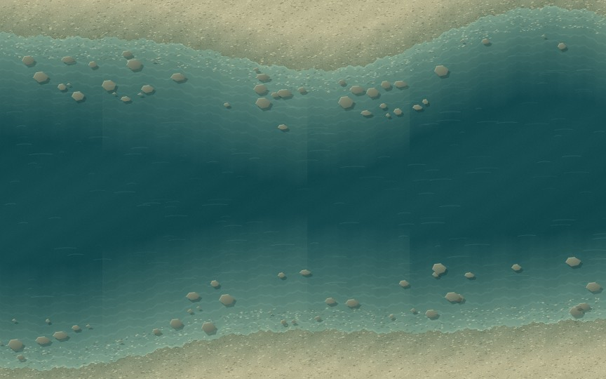

I'm developing a 3D fishing simulation to make fish respond to an angler's setup as realistically as I can.
I'm building the interaction from both ends of the line. The fish decide whether to follow a lure based on how it's presented. A hookset and the tension on the line then shape the fight.
The browser demo is an early alpha prototype of the schooling AI. Watch fish split into smaller groups and rejoin when they swim close, or click the water to cast a lure. The project has since moved into 3D in Godot and is still in development.
Godot / C# / Steering behaviors


Early alpha prototypeThe 3D fishing simulation is in development.
Game development
Canopy
A cross-platform tabletop for running tactical role-playing games together.
Players join by code, move tokens on a contour map, and roll dice together. The operator sheet keeps equipment and actions within reach while the table tracks whose turn comes next.
ShiftOps is the mobile app I built for maintenance technicians.
A technician can report a fault, start a repair, and leave a completion note for the next shift. The React Native client talks to a Flask API backed by SQLite.
I made the status change and its history entry save together. That keeps the maintenance record consistent if a request fails partway through an update.
I led the team that built Campus Swap for our senior capstone. I implemented the sign-in flow, protected routes, and admin dashboard. Students could browse listings while administrators had a separate place to manage the marketplace.
Local event discovery, from the first search to the ticket at the door.
Our team built an event platform where people can browse nearby plans, see what others are saving, and reserve tickets. Confirmed bookings appear together in a ticket wallet.
I prototyped the interface in Figma, then built expense entry and categorization for our database class project. The account view brings balances, recent transactions, and monthly spending together.
I built an image blur in CUDA and benchmarked it against a serial CPU implementation. A two-dimensional grid of GPU threads computes the output pixels in parallel, with each thread sampling the neighboring pixels needed for the blur.
CUDA / Image processing / CPU benchmarking
LETUMGame development
A co-op survival prototype. I've been working on interactions that have to agree across players, including shared storage, inventory pickups, and doors that remember their state when the world reloads.
Unreal Engine / C++
Self FinanceWeb development
A stock research dashboard that brings historical prices and related news into a single company search. I integrated the market data API and built the charts and responsive interface.
Python / Flask / Alpha Vantage
2D platformerGame development
A side-scroller built with JavaFX, OpenGL, and Box2D. I worked on enemy state machines and resource loading so the physics, levels, and audio could run together smoothly.